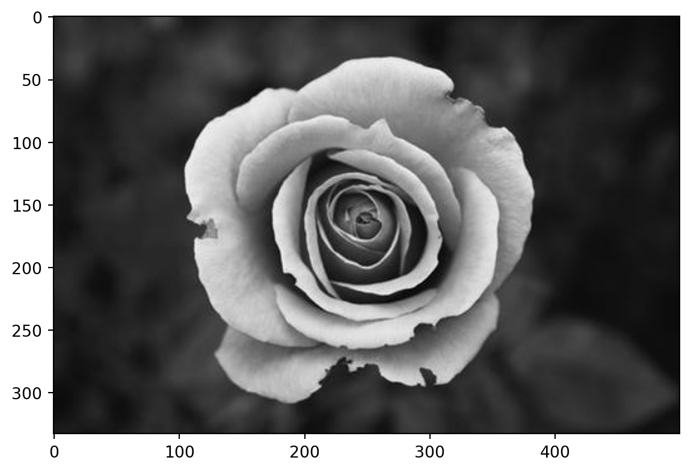
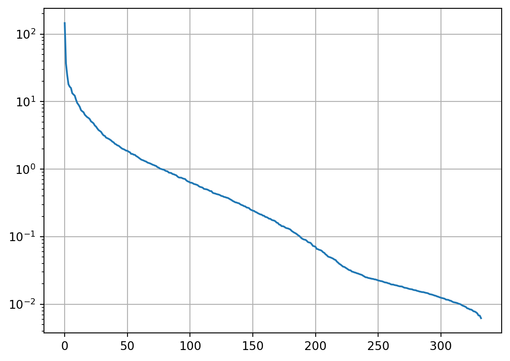
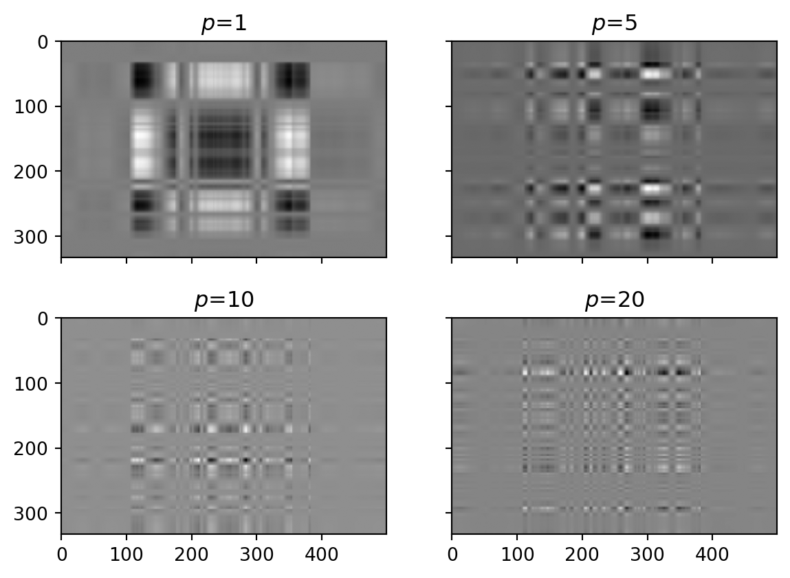
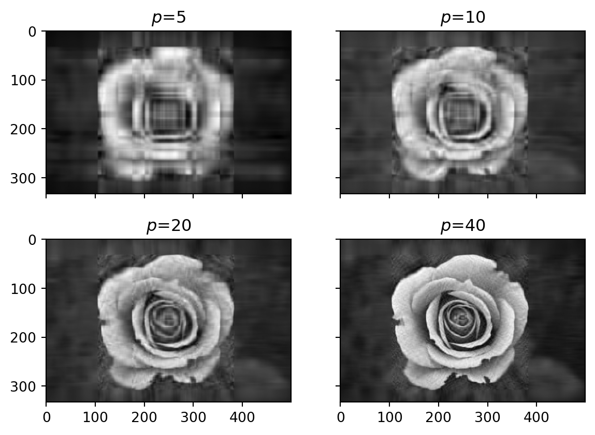

Show the code
img = plt.imread("pics/rose8bit.png");
grey = img[:, :, 0]
plt.imshow(grey, cmap="gray");
print("Image size", img.shape)
print("Matrix rank", np.linalg.matrix_rank(grey))Image size (333, 500, 4)
Matrix rank 322
We are now splitting an inverse problem into the fundamental ingredients
Our forward matrix \(\bf G\) can be decomposed into model and data eigenvectors, weighted by singular values:
\[\vb G = \sum_{i=1}^{r} \sigma_i \vb u_i\cdot \vb v_i^T = \vb U \vb\Sigma\vb V^T\]
with the eigenvalues in \(\vb\Sigma=\text{diag}(\sigma_i)\), a set of orthogonal data eigenvectors \(\vb U \in \mathbb{R}^{N\times N}\) with \(\vb U^{-1}=\vb U^T\), and model eigenvectors \(\vb V \in\mathbb{R}^{M\times M}\) with \(\vb V^{-1}=\vb V^T\).
A quadratic matrix \(\bf A\) projects a vector into one with the same length but another direction. Special vectors are eigenvectors who keep their direction when being project \[ \vb A \vb x = \lambda \vb x \]
The solution of the equation \((\vb A - \lambda\vb I)\vb x=0\) leads to eigenvalues \(\lambda\) over the characteristic polynome \(\text{det}(\vb A - \lambda \vb I)\) that correspond to orthonormal eigenvectors in the matrix \(\vb Q\) by
\[ \vb A = \vb Q \text{diag}(\lambda_i) \vb Q^T = \vb Q \vb\Lambda \vb Q^T \]
The orthonormal eigenvectors have the length 1 and mutually perpendicular (\(\vb q_i \vdot \vb q_j\) is 1 for \(i=j\) and 0 otherwise). As a consequence, the transposed \(\vb Q\) equals its inverse \(\vb Q^{-1}=\vb Q^T\).
As our matrix is assymmetric, we create a symmetric matrix from \(\vb G\) and its transpose \[ \vb A = \mqty(0 & \vb G\\ \vb G^T & 0) \]
being of size \((N+M)\times(N+M)\). It has the eigenvalue decomposition \[ \vb A \vb x_i = \lambda_i \vb x_i \quad\mbox{with}\quad \vb x_i = \mqty(\vb u_i\\ \vb v_i) \]
The vector \(\vb x_i\) is of length \(N+M\) and can be split into two parts \(\vb u_i\in R^N\) and \(\vb v_i\in R^M\)
Splitting the upper and the lower part, we see that \(\vb G\) projects \(\vb u\) into \(\vb v\) and vice versa.
\[ \Rightarrow \vb G \vb v = \lambda \vb u \quad\mbox{and}\quad \vb G^T \vb u = \lambda \vb v \]
so that we have two intertwined eigenvalue problems.
Through multiplication of the first equation with \(\vb G^T\) and the second with \(\vb G\) we obtain
\[ \vb G^T \vb G \vb v = \lambda^2 \vb v \quad\mbox{and}\quad \vb G \vb G^T \vb u = \lambda^2 \vb u \]
i.e. two eigenvalue problems for model space (\(\vb v\)) and data space (\(\vb u\))
\[ \vb G = \vb U \vb \Sigma \vb V^T \quad\mbox{and}\quad \vb G^T = \vb V \vb \Sigma \vb U^T \quad\mbox{with}\quad \vb\Sigma = \mbox{diag}(\lambda_i) \]
\(\vb U \in\mathbb{R}^{N\times N}\) spans the data space, \(\vb V \in\mathbb{R}^{M\times M}\) spans the model space
the belong together with a number \(r\) (rank) of non-zero singular values
\(\vb U\) and \(\vb V\) can be split into a data/model space and a null space
\[\vb U = [\vb U_r, \vb U_0]\]
\[\vb V = [\vb V_r, \vb V_0]\]
The eigenvectors associated with zero singular values (\(\sigma_i=0\)) span the null spaces of data and model. The number of non-zero eigenvalues \(r\) defines the rank of the matrix which can be abbreviated by
\[\vb A_r = \sum_{i=1}^{r} \sigma_i \vb u_i \cdot \vb v_i^T = \vb U_r \vb \Sigma_r\vb V_r^T\]
where \({\bf B}_r\) holds the first \(r\) columns of the matrix \(\bf B\).
A matrix can be approximated by choosing the (pseudo)rank by hand. We will exemplify the approximation on behalf of an image
img = plt.imread("pics/rose8bit.png");
grey = img[:, :, 0]
plt.imshow(grey, cmap="gray");
print("Image size", img.shape)
print("Matrix rank", np.linalg.matrix_rank(grey))Image size (333, 500, 4)
Matrix rank 322
The image (think of it as forward kernel) shows quite some structure in the middle, i.e., most of the data cover more than half of the parameters, whereas outside the image is blurry (poorly covered). We have 333 data points for 500 model parameter, a relation typical for a small (e.g., ERT) inversion. The rank, however, is smaller than \(N\) and
U, s, V = np.linalg.svd(grey);
print(U.shape, s.shape, V.shape)
plt.semilogy(s)
plt.grid()(333, 333) (333,) (500, 500)
The singular values (importance of eigenvectors) drop quickly at the beginning, reaching a slope and being under the noise level (e.g., two decades) at a value of about 60. Let’s have a look at the spanned matrices
fig, ax = plt.subplots(2, 2, sharex=1, sharey=1)
for p, a in zip([1, 5, 10, 20], ax.flat):
Ap = s[p] * U[:, p].reshape([-1, 1]) @ V[p, :].reshape([1, -1])
a.imshow(Ap, cmap="gray");
a.set_title(f"$p$={p}")
Whereas low \(p\) are associated with long-wavelength vectors (both in x-data and y-model directions), larger \(p\) carry information about fine structures (model) and subtle data anomalies.
We now approximate the image by adding the spans of an increasing number of singular values
fig, ax = plt.subplots(2, 2, sharex=1, sharey=1)
for p, a in zip([5, 10, 20, 40], ax.flat):
Ap = U[:, :p] @ np.diag(s[:p]) @ V[:p, :]
a.imshow(Ap, cmap="gray");
a.set_title(f"$p$={p}")
Whereas a rough picture can already be observed for values of 5-10, the image becomes well reconstructed for values reaching the noise level.
The forward operator
\[\vb G = \vb U_r \vb \Sigma_r \vb V_r^T\]
and its adjoint
\[ \vb G^T = \vb V_r \vb \Sigma_r \vb U_r^T \]
can be combined to the model-sided square
\[ \vb G^T \vb G = \vb V_r^T \vb \Sigma_r \vb U_r^T \vb U_r \vb \Sigma_r \vb V_r = \vb V_r^T \vb \Sigma_r^2 \vb V_r \]
that depends only on the model eigenvectors and the data-sided square
\[ \vb G \vb G^T = \vb U_r \vb \Sigma_r \vb V_r \vb V_r^T \vb \Sigma_r \vb U_r^T = \vb U_r \vb \Sigma_r^2 \vb U_r^T \]
that only consists of data eigenvectors.
Starting from the forward operator
\[\vb G_r \vb m = \vb U_r \vb \Sigma_r \vb V_r^T \vb m = \vb d\]
we multiply both equations from the left with \(\vb U_r^T\)
\[ \vb U_r^T \vb U_r \vb \Sigma_r \vb V_r^T \vb m = \vb \Sigma_r \vb V_r^T \vb m = \vb U_r^T \vb d\]
then with \(\vb \Sigma_r^{-1}\)
\[ \vb \Sigma_r^{-1} \vb \Sigma_r \vb V_r^T \vb m = \vb V_r^T \vb m = \vb \Sigma_r^{-1} \vb U_r^T \vb d\]
and with \(\vb V_r\)
\[ \vb V_r \vb V_r^T \vb m = \vb m = \vb V_r \vb \Sigma_r^{-1} \vb U_r^T \vb d\]
so that we have \(\Rightarrow \vb m = \vb G^\dagger \vb d\) with the inverse operator
\[ \vb G^\dagger = \vb V_r \vb \Sigma_r^{-1} \vb U_r^T \]
The SVD provides a generalized (Moore-Penrose) inverse
Combining inverse and forward operators containing a number of \(p\) singular values (not necessarily \(r\)) we obtain the model resolution matrix \[ \vb R^M = \vb G^\dagger \vb G = \vb V_p \vb \Sigma^{-1}_p \vb U^T_p \vb U_p \vb \Sigma_p \vb V_p^T = \vb V_p \vb V_p^T \]
which depends only on the model eigenvectors.
Combining forward and inverse operators yields the data resolution matrix \[ \vb R^D = {\bf G} {\bf G}^\dagger = {\bf U}_p{\bf \Sigma}_p{\bf V}_p^T {\bf V}_p {\bf \Sigma}^{-1}_p{\bf U}^T_p = {\bf U}_p {\bf U}_p^T \] depends only on the data eigenvectors!
For a correct classification, the matrix rank \(r\) needs to be taken into account and compared to \(N\) and \(M\).
\(M=N=r\)
\(N \le r<M\)
\(N > r \ge M\)
\(r<N \quad\mbox{and}\quad r<M\)
\[M=N=r\]
Generalized inverse = normal inverse
\[ \vb R^M = \vb R^D = \vb I \]
\[N>r=M\]
Generalized inverse = least-squares inverse
\[\vb G^\dagger = (\vb G^T \vb G)^{-1}\vb G^T = \vb V_r \vb \Sigma_r^{-2} \vb V_r^T \vb V_r \vb \Sigma_r \vb U_r^T = \vb V_r \vb \Sigma_r^{-1} \vb U_r^T \]
\[ \vb R^M = \vb I \quad , \quad \vb R^D \ne \vb I \]
\[N=r<M\]
Generalized inverse = minimum-norm inverse
\[\vb G^\dagger = \vb G^T(\vb G \vb G^T)^{-1} = \vb V_r \vb \Sigma_r \vb U_r^T \vb U_r \vb \Sigma_r^{-2} \vb U_r^T = \vb V_r \vb \Sigma_r^{-1} \vb U_r^T \]
\[ \vb R^M \ne \vb I \quad , \quad \vb R^D = \vb I \]
\[r<N \quad\mbox{and}\quad r<M\]
The generalized inverse
\[\vb G^\dagger = \vb V_r \vb \Sigma_r^{-1} \vb U_r^T \]
handles both over-determined and underdetermined model parts.
\[ \vb R^M \ne \vb I \quad , \quad \vb R^D \ne \vb I \]
Let the generalized inverse \(\vb G^\dagger = \vb V_r \vb \Sigma_r^{-1} \vb U_r^T\) invert noisy data \(\vb G \vb m + \vb n\)
\[ \vb G^\dagger (\vb G \vb m + \vb n) = \vb G^\dagger\vb G\vb m + \vb G^\dagger \vb n = \vb R^M + \sum\limits_{i=1}^r \frac{\vb u_i^T \vb n}{\sigma_i} \vb v_i \]
The projection of the noise into the data eigenvectors is generating model eigenvector contributions. However, these can be very large as the eigenvalue is in the denominator.
Small eigenvalues amplify noise in the data!
Consider a simple example of four data and model
\[ \vb G = \mqty(1&1&0&0\\1&1.1&0&0\\0&0&1&0.5\\0&0&0.5&1) \]
Let the model be simple numbers \(\vb m=[10, 11, 12, 13]^T\)
leading to the data vector \(\Rightarrow \vb d=[21.0, 22.1, 18.5, 19.0]^T\)
For the error, we choose \(\epsilon=0.2\), which is just about 1% of the data.
If we now compute models for four different noise realizations
mi = np.linalg.pinv(G) @ (G@m + np.random.randn(4)*eps)
we obtain quite different models, e.g.,
Whereas the last two values are recovered quite well, the first are varying and different from the synthetics. Even small noise levels let the solution explode.
Looking at the singular value spectrum we observe two big, a medium and a rather small value (2.5% of the biggest) \(\sigma_i=[2.05, 1.5, 0.5, 0.05]\)
The latter one is responsible for the problems.
If we approximate the matrix by the biggest three only , using a cutoff of 10%
mi = np.linalg.pinv(G, rtol=0.1) @ (G@m+np.random.randn(4)*eps)
we obtain values that are more stable and much closer to the synthetics
The solution is much less noise-depending!
rtol and compute (e.g. by pinv) \[\vb G^\dagger_p = \vb V_p \vb\Sigma_p^{-1}\vb U_p^T\]Look at data fit and choose \(p\) such that the data can be fitted within the error.